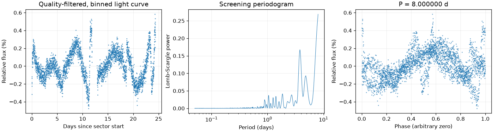
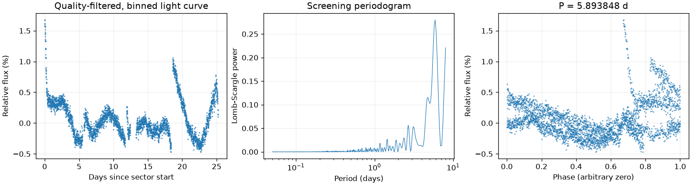
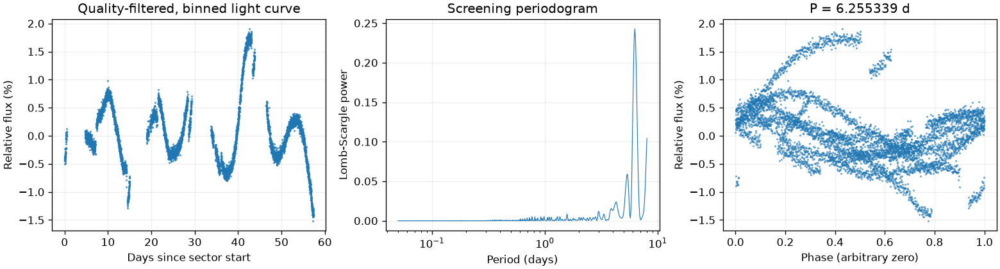

← 返回总览
TIC 294977381
证据不足或周期不一致这是筛选报告，未确认新发现，也不能代替 VSX 提交材料。
当前判断
- 目录与文献查重尚未完整完成；周期峰不是发现确认。
- 至少一个观测区的最强峰位于搜索边界；卡在相同边界不能作为周期重复的证据。
- VSX 近位置存在条目；需要核对身份及是否已经报告变光。
图中依次为亮度随时间变化、候选周期强度和折叠后的重复形状。相位零点仅供展示；纵轴是相对通量，不是标定星等。
Sector 27 · LS 8.000000 天
BLS 辅助周期：7.256947 天
最强峰位于搜索边界，尚未测得有界周期。 两种搜索周期不同，尚未自动决定采用哪一个。
前半段 LS：4.337814 天；后半段 LS：8.000000 天。
相对幅度估计 0.3035% · 有效点数 16781

Screening peak only; no correlated-noise false-alarm calibration or physical classification. Strongest peak is at the search boundary; repetition does not establish a bounded period.
Sector 63 · LS 5.893848 天
BLS 辅助周期：5.652855 天
两种搜索周期不同，尚未自动决定采用哪一个。
前半段 LS：8.000000 天；后半段 LS：6.388370 天。
相对幅度估计 0.5873% · 有效点数 16777

Screening peak only; no correlated-noise false-alarm calibration or physical classification.
Sector 98 · LS 6.255339 天
BLS 辅助周期：6.231662 天
两种搜索得到相近周期；1% 比较容差不是周期误差。
前半段 LS：6.089217 天；后半段 LS：6.089114 天。
相对幅度估计 0.8775% · 有效点数 28535

Screening peak only; no correlated-noise false-alarm calibration or physical classification.
来源、检查缺口和原始记录
{
"ra_deg": 72.3016605032565,
"dec_deg": -69.4565312136112,
"catalog_queries": [
{
"source": "VSX",
"checked_at": "2026-11-10T08:28:41.817066+00:00",
"url": "https://vsx.aavso.org/index.php",
"query": {
"params": {
"view": "api.list",
"ra": 72.3016605032565,
"dec": -69.4565312136112,
"radius": 0.04,
"format": "json"
}
},
"status": "completed",
"match_count": 8,
"note": "VSX neighborhood only; no-match is not novelty confirmation."
},
{
"source": "SIMBAD/VizieR/ADS",
"status": "not_run",
"note": "Requires detailed catalog/literature review; VSX alone is insufficient."
}
],
"vsx_neighbors": [
{
"Name": "Gaia DR3 4655396832635588864",
"RA2000": "72.20106",
"Declination2000": "-69.44031",
"ProperMotionRA": "1.7700",
"ProperMotionDec": "-0.1170",
"VariabilityType": "BE|GCAS|SDOR|WR",
"MaxMag": "15.97 G",
"MinMag": "16.13 G",
"SpectralType": "B",
"Discoverer": "Gaia collaboration",
"Category": "Variable",
"OID": "3045312",
"Constellation": "Dor",
"sep_arcsec": 139.90698541421418
},
{
"Name": "Gaia DR3 4655396690879039488",
"RA2000": "72.27844",
"Declination2000": "-69.42772",
"ProperMotionRA": "1.8880",
"ProperMotionDec": "-0.0860",
"VariabilityType": "E",
"Period": "1.24599",
"MaxMag": "17.52 G",
"MinMag": "17.76 G",
"SpectralType": "B",
"Discoverer": "Gaia collaboration",
"Category": "Variable",
"OID": "3046169",
"Constellation": "Dor",
"sep_arcsec": 107.79418476344948
},
{
"Name": "LMC V0058",
"RA2000": "72.30166",
"Declination2000": "-69.45653",
"VariabilityType": "ACYG:",
"MaxMag": "10.46 V",
"MinMag": "10.55 V",
"SpectralType": "B8I",
"Category": "Variable",
"OID": "2219145",
"Constellation": "Dor",
"sep_arcsec": 0.004415015556789723
},
{
"Name": "Gaia DR3 4655349794147768320",
"RA2000": "72.32940",
"Declination2000": "-69.43183",
"ProperMotionRA": "2.0690",
"ProperMotionDec": "-0.2010",
"VariabilityType": "ACYG",
"MaxMag": "11.48 G",
"MinMag": "11.57 G",
"SpectralType": "B",
"Discoverer": "Gaia collaboration",
"Category": "Variable",
"OID": "3046775",
"Constellation": "Dor",
"sep_arcsec": 95.58764599901963
},
{
"Name": "Gaia DR3 4655349794147768192",
"RA2000": "72.33216",
"Declination2000": "-69.42989",
"ProperMotionRA": "1.9640",
"ProperMotionDec": "-0.1340",
"VariabilityType": "BE|GCAS|SDOR|WR",
"MaxMag": "15.13 G",
"MinMag": "15.20 G",
"SpectralType": "O",
"Discoverer": "Gaia collaboration",
"Category": "Variable",
"OID": "3046807",
"Constellation": "Dor",
"sep_arcsec": 103.36744952260025
},
{
"Name": "Gaia DR3 4655349789836075648",
"RA2000": "72.33954",
"Declination2000": "-69.43841",
"ProperMotionRA": "1.7260",
"ProperMotionDec": "-0.7940",
"VariabilityType": "RRC",
"Period": "0.327417",
"MaxMag": "19.05 G",
"MinMag": "19.65 G",
"Discoverer": "Gaia collaboration",
"Category": "Variable",
"OID": "8724172",
"Constellation": "Dor",
"sep_arcsec": 80.91760153072958
},
{
"Name": "Gaia DR3 4655349583677400192",
"RA2000": "72.36793",
"Declination2000": "-69.47760",
"ProperMotionRA": "1.8920",
"ProperMotionDec": "-0.3410",
"VariabilityType": "L",
"MaxMag": "15.46 G",
"MinMag": "16.04 G",
"SpectralType": "C",
"Discoverer": "Gaia collaboration",
"Category": "Variable",
"OID": "3047172",
"Constellation": "Dor",
"sep_arcsec": 112.93706514992087
},
{
"Name": "LMC V0067",
"RA2000": "72.38323",
"Declination2000": "-69.45221",
"VariabilityType": "SR",
"Period": "250",
"Epoch": "2445971",
"MaxMag": "14.9 I",
"MinMag": "(0.5) I",
"Category": "Variable",
"OID": "2218092",
"Constellation": "Dor",
"sep_arcsec": 104.22496313162607
}
],
"notes": [],
"errors": [],
"repeatability": {
"status": "boundary_limited",
"fractional_spread": 0.33669664713844266,
"tolerance": 0.05,
"note": "At least one strongest peak is at a search boundary; do not promote shared bounds as periodic evidence."
},
"localization": null,
"submission": {
"name": null,
"ra_deg": null,
"dec_deg": null,
"coordinate_source": null,
"coordinate_epoch": null,
"variability_type": null,
"period_days": null,
"period_error_days": null,
"epoch": null,
"epoch_time_standard": null,
"epoch_event": null,
"max_magnitude": null,
"min_magnitude": null,
"passband": null,
"magnitude_source": null,
"mean_magnitude": null,
"amplitude_magnitude": null,
"amplitude_passband": null,
"discoverers": null,
"references": null
}
}